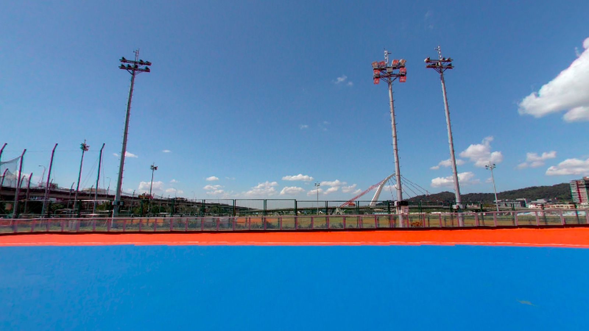

行前通知・比賽
115台北市中正盃
F.S.D平花班 參賽家長請詳閱 🛼

🚗 交通管制特別通知 重要
當天河濱有路跑活動，06:00~10:30 車輛進出會有管制。
- 管制
- 06:00~10:30
- 路跑出發
- 07:30、07:55 兩梯次
- 水門淨空
- 預估 09:00 後
8:00~9:30有比賽的選手（初級組雙足S、新人組雙足S、新人組交叉），如要開車到溜冰場停車場，請務必在07:30前抵達；若遇到交管，就需要從基7號水門加油站口步行到溜冰場（約9分鐘），請預留時間並帶好裝備。
重要連結
ℹ️比賽資訊
⏰預估賽程
本隊有選手其他組別
- 08:00~08:47初級組 雙足S形本隊有選手
- 08:47~09:28新人組 雙足S形本隊有選手
- 09:28~09:51新人組 交叉形本隊有選手
- 09:51~11:07選手組 雙足S形
- 11:01~11:22新人組 單足S形本隊有選手
- 11:22~12:46選手組 單足S形先五年級到大專，後幼童到四年級
- 12:46~13:04公開組預賽
- 13:04~13:34午休 🍱
- 13:34~14:54公開組決賽
- 14:54~16:15初級指定套路本隊有選手
- 16:15~17:12中級指定套路本隊有選手
- 17:12~20:00個人花式繞樁本隊有選手
※ 以上時間僅為預估，實際依現場比賽狀況為主。
📢提醒事項
- 1
時間僅供參考，請提早到
表單建議抵達時間教練有幫大家提前預抓，大會只公布賽程順序、不提供時間表，以上時間僅為預估，實際依現場比賽狀況為主，建議大家提前到現場穿裝備熱身~
- 2
先到「Defly逆飛輪」帳篷報到
到賽場找到我們「Defly逆飛輪」帳篷，在帳篷內可自行架設座位或墊子，教練會在現場先發放號碼布(號碼布應別在選手背面明顯處)及幫小朋友確認裝備穿著等，沒有問題就可以去熱身，教練也會在各組賽前再次集合提醒比賽重點事項。
- 3
跑兩次，跑完再下場
初級組、新人組每個人比賽時會跑兩次，A道B道各跑一次，成績取優，記得要跑完兩次不要提前下來。若有得獎可以等獎狀出來拍照，賽後也可以留下來觀賽，若要離開通知一下教練即可。
- 4
裝備提醒（違規會取消資格）
幼童及國小選手前溜項目一定要戴安全帽；號碼布要別在背後明顯處；初級組、新人組輪子不可超過80mm，否則會被取消資格。
- 5
家長請在場外加油
比賽場地只有選手可以進入（候場區除外），家長請在場外加油，也請不要站在賽道兩側。
- 6
雨天可能延期
若比賽週降雨機率達60%以上，大會可能延期（最快週四公告，第一順延日為11/8（日）），教練也將另行通知。
- 7
賽後集合＆大合照
當天每一個組別賽事結束，
- 所有孩子一起找教練，教練會給每個人比賽可以調整和未來練習的方向
- 會有平花班的說明會、寒假訓練內容及活動
- 團體大合照，也歡迎所有家長一同前來。
當天任何問題歡迎與教練聯絡 0988-359-317